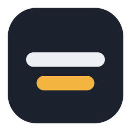

UnderText
正在检查模型…
音频来源
收听
字幕跟着播放进度走
要给这台 Mac 正在播放的声音（比如会议、视频）加字幕：先安装 BlackHole，在“音频 MIDI 设置”里把它加进一个“多输出设备”，然后在这里选择 BlackHole。
字幕
只显示英文。不加载翻译模型，更省电。
排列方式
关闭翻译时始终显示
每段前面标上 S1、S2…
语音识别改用能效核心，翻译模型调用得更少。字幕会稍晚一点出现。
高级
模型
正在检查…
模型文件夹里的 GGUF 文件
主模型翻译出来之前，先显示 Opus-MT 的快速译文
分段与说话人
s
在字幕窗口里滚动就能看到
0 表示不限。两人访谈可以设为 2。
一个人被分成两个时调低，两个人被当成一个时调高。默认 0.45。
语音识别
越短越快，但更耗电
s
s
供 undertext-cli report 分析